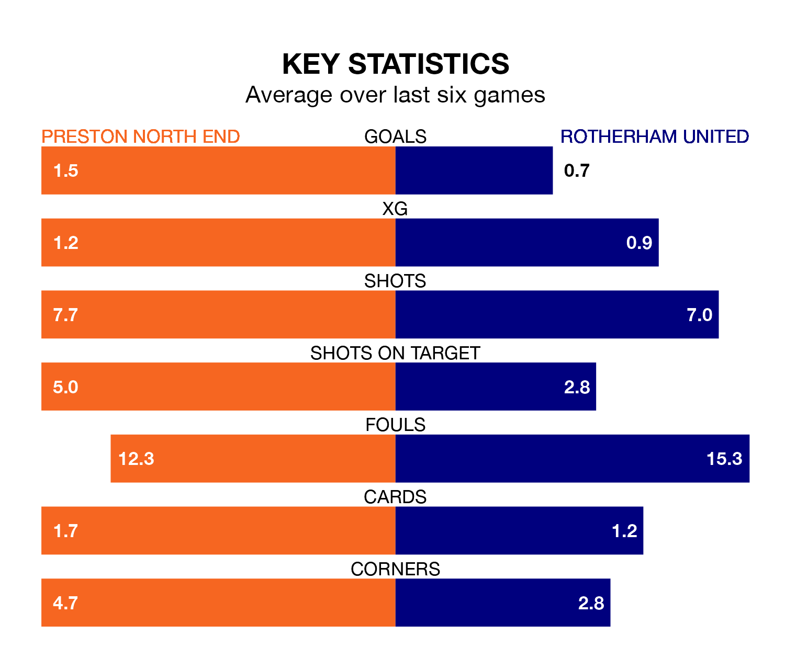

Preston North End are heavy favourites to keep all three points at home in Friday's kick-off against Rotherham United.
The Lilywhites, who sit ninth in EFL Championship with 37 games played, are priced at 1.5 to seal victory at Deepdale.
Sitting 15 places and 36 points behind them in the table, Rotherham are 5.8 to win with *Betting Company*, while the draw is at 4.3.
Preston are in reasonable form in EFL Championship, with three wins and two draws from their last six games.
With no wins and a draw over that period, Rotherham's form is much worse – they have taken one point from 18, compared to North End's 11.
In the last 10 years, Preston and Rotherham have played each other on 13 occasions. Preston won three of them, Rotherham four, and they drew six times.
On average, the Lilywhites scored 1.2 goals and the Millers 1.2 in those matches.
Their last meeting was on September 23, when they played out a 1-1 draw.
With 30 goals in 38 games so far this season, United are the league's joint-second-lowest scorers with 0.8 goals per game. And they are conceding more than average, letting in 77 goals at a rate of 2.0 per game.
The Lilywhites are also below average scorers, with 1.3 goals per game, compared to a league average of 1.4. They have conceded 1.5 goals per game.
In Will Keane, the home team have one of the league's sharpest shooters so far this season. He has notched 12 goals in 29 appearances, to sit ninth in the scoring charts.
The Millers' top scorers, with four goals each, are Tom Eaves and Hakeem Odofin.
Preston's last match was on March 16, a 1-0 win against Plymouth Argyle, with Liam Millar getting the goal for the Lilywhites.
Rotherham drew 0-0 with Huddersfield Town last time out, also on March 16.
Updated: 12:16 (UTC), 25/03/24